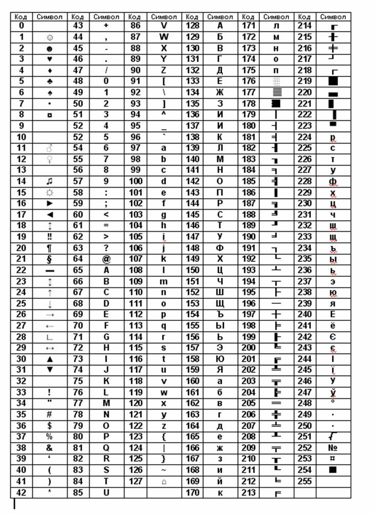

ƒл€ кодуванн€ текстовоњ ≥нформац≥њ прийн€то м≥жнародний стандарт ASCII (American Standard Code for Information Interchange).
«а ц≥м стандартом:
Ќижче приведен≥й один з дек≥лькох вар≥ант≥в:
|  |
—имвол f у таблиц≥ маЇ номер 102
—имвол Ѕ маЇ номер 129.
—имволи англ≥йське A та рос≥йське A мають однаковий вигл€д, але внутр≥шн≥ коди в них р≥зн≥ Ц 65 та 128.
—имвол 0 (нуль) маЇ внутр≥шн≥й код 48.
—имвол проб≥л маЇ внутр≥шн≥й код 32.
¬елик≥ та маленьк≥ л≥тери мають р≥зн≥ AsciiЦкоди.
ƒл€ виводу на екран символу, €кого немаЇ на клав≥атур≥, потр≥бно зажати клав≥шу ALT, набрати ASCIIЦкод символу на цифров≥й клав≥атур≥, а пот≥м в≥дпустити клав≥шу ALT.
«наченн€ зм≥нних цього типу, це один будь-€кий символ з таблиц≥ Ascii.
var a,b,с:char;
«м≥нним цього типу можна присвоювати значенн€:
” ≥нших випадках буде помилка Ц нев≥дпов≥дн≥сть тип≥в: Type mismatch
¬в≥д символ≥в виконуЇтьс€ т≥льки процедурою Readln ≥ т≥льки у стовпчик (натискуючи Enter)
Readln(a); readln(b);
¬ив≥д виконуЇтьс€ будь-€кою процедурою виводу writeln або write.
writeln(a,Т С,b); write(a,Т С,b);
ѕор≥вн€нн€ символ≥в виконуЇтьс€ по њх внутр≥шньому Ascii коду.
| ѕрограма. | ѕо€сненн€ та результат роботи |
|---|---|
| var a,b:char; begin a:=Т1Т;b:=ТaТ; if a< b then Writeln(С*Т) else writeln(С**Т); end. |
a:=Т1Т Ascii код символу Т1Т =49 b:=ТaТ Ascii код символу ТaТ =97, “ому a< b в≥рно, тому програма надрукуЇ *. Ѕудь-€ка цифра менша будь-€коњ л≥тери. |
| var a,b:char; begin a:=ТёТ;b:=ТWТ; if a< b then Writeln(С*Т) else writeln(С**Т); end. |
a:=ТёТ Ascii код символу ТёТ =158 b:=ТWТ Ascii код символу ТWТ =87, “ому a< b нев≥рно, тому програма надрукуЇ **. Ѕудь-€ка рос≥йська л≥тера б≥льша будь-€коњ англ≥йськоњ л≥тери. |
| var a,b:char; begin a:=ТGТ;b:=ТgТ; if a< b then Writeln(С*Т) else writeln(С**Т); end. | a:= ТGТ Ascii код символу ТGТ =71 b:= ТgТ Ascii код символу ТgТ =103, “ому a< b в≥рно, тому програма надрукуЇ *. Ѕудь-€ка велика л≥тера менша будь-€коњ маленькоњ л≥тери. |
–езультатом функц≥њ Chr(x) Ї символ з Ascii кодом x. ÷€ функц≥€ використовуЇтьс€ дл€ виводу символ≥в, €к≥ не можна ввести з клав≥атури. «ам≥сть Chr(x) можна писати #x.
–езультатом функц≥њ Ord(с) Ї Ascii код символу с.
| ѕрограма | –езультат роботи |
|---|---|
| Program P1; var d:char; begin d:=chr(115); writeln(d); end. |
S |
|
Program P2; begin writeln(chr(227),chr(224),chr(160)); writeln(#87,#69,#66); end. |
ура WEB |
|
Program P3; var x,y,z:byte; begin x:=ord('1');y:=ord('2'); z:=ord('3'); writeln(x,' ',y,' ',z); end. | 49 50 51 |
|
Program P4; var x:char; begin x:=chr(ord('Z')); writeln(x); end. | Z |
|
Program P5; var x:byte; begin x:=ord(chr(100)); writeln(x); end. | 100 |